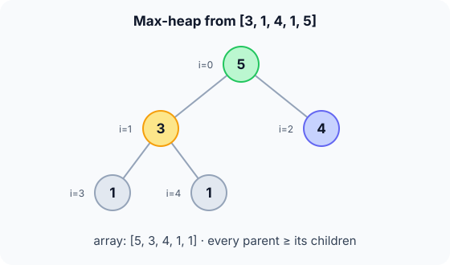

Prerequisites
- Min-heap: the same idea with the comparison flipped.
- Array indices: children of $i$ at $2i+1$ and $2i+2$.
- Logarithms.
The analogy
Everyday analogy
Think of a sports league table drawn as a bracket where every team is ranked above the teams that feed into it. The best team is always at the top.
A max-heap keeps that rule between every parent and its children. Remove the champion, promote the right challengers along one path, and the new best is at the top again.
How it works
Start with heapify on paper
Heapify [3, 1, 4, 1, 5] into a max-heap: from the last parent back to the root, sink each node below its bigger child while it is smaller. Predict, then open "Check".
Example: predict before you read
Step 1. Index 1 holds 1, with children 1 and 5. Predict the swap.
Check
It swaps with 5, the bigger child: [3, 5, 4, 1, 1].
Step 2. Cover the next line and guess: the root 3 has children 5 and 4. What happens?
Check
3 swaps with 5: [5, 3, 4, 1, 1].
Step 3. 3 is now at index 1 with children 1 and 1. Predict: does it keep sinking?
Check
No, 3 is bigger than both. Final max-heap: [5, 3, 4, 1, 1].

Quick recall: Before reading further, cover the text above and say out loud: in a max-heap, which child does a sinking node swap with, and why?
Check your answer
The bigger child. Swapping with the smaller one would put a smaller value above a bigger one and break the rule.
Finish the picture: insert and remove the maximum
Work on [5, 3, 4, 1, 1].
- Insert 6 at index 5 (child of index 2). Predict where it ends.
Check
6 > 4: swap →
[5, 3, 6, 1, 1, 4]; 6 > 5: swap →[6, 3, 5, 1, 1, 4]. It's the new root. - Remove the max. Predict the heap afterwards.
Check
Return 6; the last leaf 4 goes to the root:
[4, 3, 5, 1, 1]; 4 < 5, swap:[5, 3, 4, 1, 1].
Quick recall: Without scrolling up, say out loud: after removing the max, what goes to the root first?
Check your answer
The last leaf. Then it sinks below its bigger child until the rule holds.
The rule in plain words
Heap rule: every parent is ≥ its children, in a complete tree stored in an array.
Insert: append, then sift up while bigger than the parent. Remove max: move the last leaf to the root, then sift down below the bigger child.
Quick recall: Before you read the code, write the steps of max-insert in your own words. Then check below.
Check your answer
1. Put the new value at the end. 2. While it is bigger than its parent, swap them. 3. Stop at the root or when the parent is bigger or equal.
The code
Read this code after you have done the insert by hand. It will make more sense.
typedef struct { int a[100]; int n; } MaxHeap;
void max_insert(MaxHeap *h, int v) { /* caller checks n < 100 */
int i = h->n++;
h->a[i] = v;
while (i > 0 && h->a[(i - 1) / 2] < h->a[i]) { /* parent smaller: swap up */
int p = (i - 1) / 2, t = h->a[p];
h->a[p] = h->a[i]; h->a[i] = t;
i = p;
}
}void max_sift_down(int a[], int n, int i) {
for (;;) {
int b = i, l = 2 * i + 1, r = 2 * i + 2;
if (l < n && a[l] > a[b]) b = l; /* b = biggest of the three */
if (r < n && a[r] > a[b]) b = r;
if (b == i) return;
int t = a[i]; a[i] = a[b]; a[b] = t;
i = b;
}
}Definition
What you just did, in one line: a max-heap is a complete binary tree, stored in an array, where every parent is greater than or equal to its children, so the maximum is at the root.
graph TD
A((5)) --> B((3))
A --> C((4))
B --> D((1))
B --> E((1))
How fast is it?
Quick recall: Before looking at the formula, predict: to find the 3 largest of 1,000,000 values with a max-heap, how many heap operations do you need after building it?
Check your answer
Three remove-max operations, each $O(\log n)$, about 20 steps each.
Finding the $k$ largest values: build a max-heap once, then remove the max $k$ times:
$$\underbrace{O(n)}_{\text{build}} + \underbrace{k \cdot O(\log n)}_{k \text{ removals}} \;=\; O(n + k \log n)$$For a small $k$ this beats sorting everything, which costs $O(n \log n)$.
| Operation | Cost | Why |
|---|---|---|
| Build (heapify) | $O(n)$ | Bottom-up sift-downs |
| Insert | $O(\log n)$ | Sift up one path |
| Remove max | $O(\log n)$ | Sift down one path |
| Peek max | $O(1)$ | It's a[0] |
| Heap sort ($n$ removals) | $O(n \log n)$ | See Heap sort |
Warning
Don't mix the two kinds. Running min-heap code (swap with the smaller child) on a max-heap silently breaks it. In C you can keep one min-heap implementation and store negated values to get a max-heap.
Exam tip
Heap sort uses a max-heap to sort ascending: each removed maximum goes to the end of the array. If asked "which heap for ascending heap sort", answer max-heap.
Common mistakes
- Swapping with the smaller child when sifting down a max-heap.
- Comparing with
>where<belongs in the sift-up loop: a parent smaller than the new value must move down. - Assuming the second-largest value is always at index 1; it can be at index 2.
Try it yourself
Exercise 1 (warm-up)
Is [9, 7, 8, 3, 5] a valid max-heap?
Hint
Check each parent against its children.
Answer
Yes: 9 ≥ 7 and 8; 7 ≥ 3 and 5.
Exercise 2 (a bit harder)
Insert 10 into the max-heap [9, 7, 8, 3, 5], then remove the max twice. Show the array after each step. Write your answer down before you open it.
Show answer
Insert: 10 goes to index 5 under 8, swaps with 8, then with 9 → [10, 7, 9, 3, 5, 8]. Remove 10: 8 to the root, sinks below 9 → [9, 7, 8, 3, 5]. Remove 9: 5 to the root, sinks below 8 → [8, 7, 5, 3].
Did you know?
Did you know?
A max-heap with a fixed size, used the other way round (a min-heap of size $k$), finds the $k$ largest items of a stream that's too big to store, in $O(n \log k)$.
The same structure ranks bids in auction systems and picks the next highest-priority job in schedulers.
Key points to remember
If you remember one thing from each line, remember the because.
- The maximum is at the root because every parent is ≥ its children.
- Sinking swaps with the bigger child because that child is the only safe new parent.
- Insert and remove-max are $O(\log n)$ because the complete tree has height $\lfloor \log_2 n \rfloor$.
- Top-$k$ costs $O(n + k \log n)$ because building is linear and each removal is logarithmic.
- Heap sort uses a max-heap because each removed maximum goes into its final place at the end of the array.
Self-check questions
Answer these in order, out loud. They follow the page, so your answers become the script of your video.
- How is a max-heap like a ranked tournament bracket?
Sample answer
Every team is ranked above the teams feeding into it, so the best team is always at the top.
- Walk through heapifying [3, 1, 4, 1, 5] into a max-heap.
Sample answer
Index 1 (1) swaps with 5, giving [3, 5, 4, 1, 1]; the root 3 swaps with 5, giving [5, 3, 4, 1, 1]; 3 then stays above two 1s.
- Why does
max_insertloop while the parent is smaller than the new value?A good answer states the rule being repaired.
Sample answer
The rule is parent ≥ child. A smaller parent violates it, so they swap and the check repeats one level higher.
- So what is a max-heap, in one sentence?
Sample answer
A complete binary tree in an array where every parent is ≥ its children, so the maximum is at the root.
- Why must a sinking node swap with the bigger child?
A good answer tries the smaller child.
Sample answer
If it swapped with the smaller child, that child would become the parent of the bigger one, breaking the rule. The bigger child is ≥ everything below it.
- What do build, insert, remove-max and peek cost?
Sample answer
Build $O(n)$, insert and remove-max $O(\log n)$, peek $O(1)$.
- When is a max-heap better than sorting for "the 10 largest values"?
Sample answer
When $n$ is large: building is $O(n)$ and 10 removals cost $O(10 \log n)$, much less than sorting in $O(n \log n)$.
- If you had to teach this to a friend in 2 minutes, what would you leave out, and why?
Sample answer
I'd leave out top-$k$ and the negation trick. I'd keep the tournament analogy, heapifying [3, 1, 4, 1, 5] into [5, 3, 4, 1, 1], and "max at the root, $O(\log n)$ insert and remove".
External resources
- VisuAlgo: Binary heap: a max-heap by default: insert and extract-max step by step.
- GeeksforGeeks: Max-heap: operations with code.
- Wikipedia: Heap: variants and applications.
Videos
- YouTube search: max heap insert and delete: pick a short walkthrough.